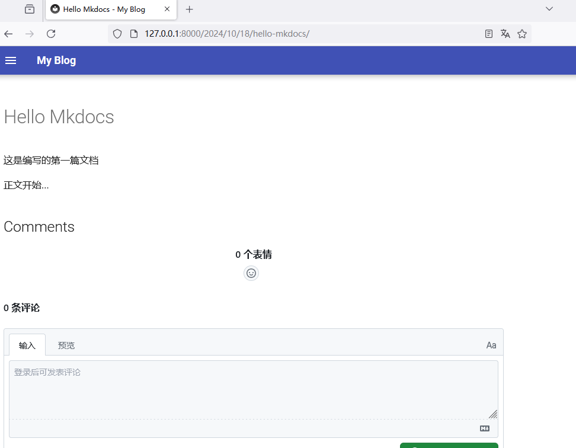

使用mkdocs创建一个简单的博客系统
本文将介绍如何使用mkdocs创建静态博客。
前言
每个做技术的都希望有一个属于个人的小站点，不管是写一些随笔，还是记录技术总结，但是又不想弄得很复杂。这篇文章也许会帮到你。
本博客使用的技术栈为mkdocs + material 主题，配合 giscus 评论系统搭配而成，听起来是不是感觉非常复杂，放心，只会涉及一些简单的命令。
安装mkdocs
首先是安装mkdocs ，它是python 编写的一个基于Markdown 文档的静态站点生成器。
使用pip 进行安装即可
# pip3 install mkdocs
首先需要安装
python： https://www.python.org/
创建新项目
使用mkdocs new new-project ，即可创建一个空的new-project 项目 。
# mkdocs new new-project
INFO - Creating project directory: new-project
INFO - Writing config file: new-project/mkdocs.yml
INFO - Writing initial docs: new-project/docs/index.md
#
创建new-project 新项目后，目录格式如下：
# tree new-project/
new-project/
├── docs
│ └── index.md
└── mkdocs.yml
1 directory, 2 files
#
其中
mkdocs.yml：主配置文件docs：静态文档目录
实时预览
mkdocs 提供了内置web 服务器，以便在编写文档的时候可以实时浏览文档，在新项目目录下，使用如下命令即可启动该web 服务器：
$ cd new-project/
$ mkdocs serve
INFO - Building documentation...
INFO - Cleaning site directory
INFO - Documentation built in 0.14 seconds
INFO - [15:14:07] Watching paths for changes: 'docs', 'mkdocs.yml'
INFO - [15:14:07] Serving on http://127.0.0.1:8000/
此时若打开该网页，会看到默认的主页：
生成网页文件
若文档编写完后，想要部署到静态服务器上，可以将其生成静态站点，而后部署到静态服务器即可，例如：
# cd ..
# cd new-project/
# mkdocs build
INFO - Cleaning site directory
INFO - Building documentation to directory: /mnt/j/new-project/site
INFO - Documentation built in 0.09 seconds
#
此时会在当前目录下，生成site 目录，而该在目录下，是生成一系列的静态文件。
# tree site
site
├── 404.html
├── css
│ ├── base.css
│ ├── bootstrap.min.css
│ ├── bootstrap.min.css.map
│ ├── brands.min.css
│ ├── fontawesome.min.css
│ ├── solid.min.css
│ └── v4-font-face.min.css
├── img
│ ├── favicon.ico
│ └── grid.png
├── index.html
├── js
│ ├── base.js
│ ├── bootstrap.bundle.min.js
│ ├── bootstrap.bundle.min.js.map
│ └── darkmode.js
├── search
│ ├── lunr.js
│ ├── main.js
│ ├── search_index.json
│ └── worker.js
├── sitemap.xml
├── sitemap.xml.gz
└── webfonts
├── fa-brands-400.ttf
├── fa-brands-400.woff2
├── fa-regular-400.ttf
├── fa-regular-400.woff2
├── fa-solid-900.ttf
├── fa-solid-900.woff2
├── fa-v4compatibility.ttf
└── fa-v4compatibility.woff2
5 directories, 29 files
#
配置blog主题
mkdocs-material 是mkdocs 使用最多的第三方主题，其内置了blog 插件可供直接调用。
安装mkdocs-material
使用pip 即可安装该主题
# pip3 install mkdocs-material
创建blog必要的目录
使用mkdocs-material的博客插件，需要新建docs/posts 目录，以便插件能够扫描该目录下所有的Markdown 文件。
# cd ..
# cd new-project/
# mkdir -p docs/posts/
# tree docs/
docs/
├── index.md
└── posts
1 directory, 1 file
#
配置mkdocs.yml
该配置文件默认只有一项配置：site_name，也是唯一必须要有的一项。
# cat mkdocs.yml
site_name: My Docs
#
在此基础上，新增theme 和plugins 配置为blog 类型
配置如下
# cat mkdocs.yml
site_name: My Blog
theme:
name: material
plugins:
- blog:
blog_dir: .
#
上述内容是一个最基本的blog 配置，含义是mkdocs 使用了mkdocs-material 主题，并且启用了blog插件，blog 的根目录为当前目录。
编写第一篇博客
关于更多的内容可以参考： mkdocs-material-setting-up-a-blog
在开始之前，需要先清理掉docs/index.md 的内容，以免造成干扰。
# > docs/index.md
新增第一篇博客
在/docs/posts/ 中可以编写第一篇文档了。
# cat >> docs/posts/hello_mkdocs.md << EOF
> ---
> date: 2024-10-18
> categories:
> - hello
> draft: false
> ---
>
> # Hello Mkdocs
>
> 这是编写的第一篇文档
>
> <!-- more -->
>
> 正文开始...
> EOF
#
博客元数据
文档的内容如下：
# cat docs/posts/hello_mkdocs.md
---
date: 2024-10-18
categories:
- hello
draft: false
---
# Hello Mkdocs
这是编写的第一篇文档
<!-- more -->
正文开始...
#
其中--- 包含的是博客的元信息
---
date: 2024-10-18
categories:
- hello
draft: false
---
date： 文档的日期categories： 文档的分类draft： 是否是草稿
接下来便是摘要
# Hello Mkdocs
这是编写的第一篇文档
<!-- more -->
<!-- more --> 标签之上的内容，便是摘要。
实际效果展示
完成后，便可以使用mkdocs serve 查看实际的效果了。

新增giscus评论系统
giscus 是github的一个应用程序，由GitHub Discussions提供支持的评论系统。
由于是基于github 的，所以需要先在网页上登录github 才能进行后续的操作。
安装giscus
使用浏览器打开https://github.com/apps/giscus打开该页面，选择Install 进行安装
点击安装后，会提示对于哪些存储库有权限，由于是给mkdocs 使用，所以给定一个预先创建好的仓库即可。
最后点击Install 即可安装。
生成giscus配置文件
打开https://giscus.app/zh-CN即可配置该giscus ，输入仓库信息，选择映射关系，即可生成配置文件。
将giscus集成到mkdocs上
覆盖原始comments.html 文件，新建overrides/partials/comments.html 文件。
# cd ..
# cd new-project/
# mkdir -p overrides/partials/
#
# touch overrides/partials/comments.html
#
编辑comments.html 文件，首先键入模版内容：
# cat overrides/partials/comments.html
{% if page.meta.comments %}
<h2 id="__comments">{{ lang.t("meta.comments") }}</h2>
<!-- Insert generated snippet here -->
<!-- Synchronize Giscus theme with palette -->
<script>
var giscus = document.querySelector("script[src*=giscus]")
// Set palette on initial load
var palette = __md_get("__palette")
if (palette && typeof palette.color === "object") {
var theme = palette.color.scheme === "slate"
? "transparent_dark"
: "light"
// Instruct Giscus to set theme
giscus.setAttribute("data-theme", theme)
}
// Register event handlers after documented loaded
document.addEventListener("DOMContentLoaded", function() {
var ref = document.querySelector("[data-md-component=palette]")
ref.addEventListener("change", function() {
var palette = __md_get("__palette")
if (palette && typeof palette.color === "object") {
var theme = palette.color.scheme === "slate"
? "transparent_dark"
: "light"
// Instruct Giscus to change theme
var frame = document.querySelector(".giscus-frame")
frame.contentWindow.postMessage(
{ giscus: { setConfig: { theme } } },
"https://giscus.app"
)
}
})
})
</script>
{% endif %}
#
接着将上述生成的giscus 配置文件，编辑到上述comments.html文件中的<!-- Insert generated snippet here --> 和<!-- Synchronize Giscus theme with palette --> 之间。
完整的内容为：
# cat overrides/partials/comments.html
{% if page.meta.comments %}
<h2 id="__comments">{{ lang.t("meta.comments") }}</h2>
<!-- Insert generated snippet here -->
<!-- giscus.app/client.js 相关代码 -->
<!-- Synchronize Giscus theme with palette -->
<script>
var giscus = document.querySelector("script[src*=giscus]")
// Set palette on initial load
var palette = __md_get("__palette")
if (palette && typeof palette.color === "object") {
var theme = palette.color.scheme === "slate"
? "transparent_dark"
: "light"
// Instruct Giscus to set theme
giscus.setAttribute("data-theme", theme)
}
// Register event handlers after documented loaded
document.addEventListener("DOMContentLoaded", function() {
var ref = document.querySelector("[data-md-component=palette]")
ref.addEventListener("change", function() {
var palette = __md_get("__palette")
if (palette && typeof palette.color === "object") {
var theme = palette.color.scheme === "slate"
? "transparent_dark"
: "light"
// Instruct Giscus to change theme
var frame = document.querySelector(".giscus-frame")
frame.contentWindow.postMessage(
{ giscus: { setConfig: { theme } } },
"https://giscus.app"
)
}
})
})
</script>
{% endif %}
#
同时，还需要修改mkdocs.yml 在theme 中新增custom_dir 参数，完整的配置参数为：
# cat mkdocs.yml
site_name: My Blog
theme:
name: material
custom_dir: 'overrides'
plugins:
- blog:
blog_dir: .
#
custom_dir 参数的作用是覆盖原始模版文件。
为博文开启评论框
还记得创建hello_mkdocs.md 的元信息吗？
# head docs/posts/hello_mkdocs.md
---
date: 2024-10-18
categories:
- hello
draft: false
---
# Hello Mkdocs
这是编写的第一篇文档
#
仅需要在元信息上添加comments: true 即可，新增评论框。
修改后的文件为：
# head docs/posts/hello_mkdocs.md
---
date: 2024-10-18
categories:
- hello
draft: false
comments: true
---
# Hello Mkdocs
#
打开网页，便可以进行评论了。

开启RSS
关于RSS的文档，参考如下： https://squidfunk.github.io/mkdocs-material/setup/setting-up-a-blog/#rss
RSS 对于博客而言，非常重要，可以方便用户订阅网站RSS feed，接下来便介绍如何开启RSS 。
安装插件
# pip3 install mkdocs-rss-plugin
配置RSS
在mkdocs.yml中新增关于RSS 信息的参数。
plugins:
- blog:
blog_dir: .
- rss:
match_path: /*
categories:
- categories
- tags
use_git: false
其参数的作用为开启rss 。
match_path:： 匹配 指定 目录下的文档。categories：feed类别。use_git: 禁用git。
其完整参数为：
# cat mkdocs.yml
site_name: My Blog
theme:
name: material
custom_dir: 'overrides'
plugins:
- blog:
blog_dir: .
- rss:
match_path: /*
categories:
- categories
- tags
use_git: false
#
效果展示
完成后，便可以使用mkdocs serve 查看实际的效果了。
在浏览器中输入127.0.0.1:8001/feed_rss_created.xml便可以查看该站点的RSS信息了。
如上，则证明该RSS 配置成功。
总结
一个最最最简单的使用mkdocs 创建博客系统的案例就结束了，简单的总结一下：
首先mkdocs 是基于python 的第三方软件，所以需要依赖其python 环境，所以需要使用该工具，得先安装python。
其次使用的博客系统是源于mkdocs 的第三方主题material，也是需要额外安装的。
https://github.com/squidfunk/mkdocs-material
接着便是导入了Giscus评论系统，它是github中的一个应用软件，需要先到github上进行安装，而后到https://giscus.app/zh-CN进行配置，获取到相关的配置文件，最后通过覆盖mkdocs 原始文件的方式集成到mkdocs 中。需要注意的是，覆盖mkdocs 需要修改mkdocs.yml配置文件，在theme 中引入custom_dir 相关配置。
最后便是集成了RSS，它也是一个第三方插件，需要进行额外安装，安装完毕后，需要在plugins 中进行配置RSS 相关信息。
使用mkdocs创建一个简单的博客系统
https://wangli2025.github.io/2024/10/18/Create-a-simple-blog-system-using-mkdocs.html
本站均为原创文章，采用 CC BY-NC-ND 4.0 协议。转载请注明出处，不得用于商业用途。